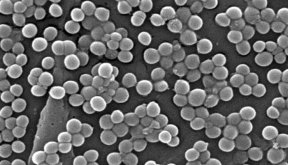

Index
- Click these headings to get to the sections of this page
-
- INTERNET
- BENEFITS OF INTERNET APPLICATION
- The World Wide Web (WWW)
- What is the WWW?
- How Does the WWW Work?
- How Does the Browser Fetch the Page
- Stories
Internet
INTERNET
This is a virtual world provided by networks of computers with multi-users.
It is an international network of networks of computers linking different types of users:
Academic, Industries, Government, Health Institutions, military, individuals, etc, for the purpose of sharing information.
As a communication network among computers, the internet allows you to locate and retrieve information on other computers linked to the internet
as well as send messages electronically to and from other people elsewhere on the internet.
Whenever Internet software application is used, the client software will either be on your personal computer,
the computer you log onto for access to the internet (your host),
or yet another computer to which you connect in other to use client software you may not have on your computer.
As you navigate through the Internet, you will find yourself logged onto different host computers,
sometimes gaining access to different client programs and also accessing different servers;
it can be complicated. Fortunately, the purpose of advanced Internet software is to hide these complexities
from users so as to achieve success.
The internet has six application protocols: Electronic mail (E-mail), World Wide Web (Hypertext Transfer Protocol or HTTP),
Gopher, Telnet, File Transfer Protocol (FTP), Each of these application protocol has special client software, and many web browsers,
such as Netscape from communication and internet Explorer from Microsoft, which are capable of reading and displaying data from all
the applications.
This is the
BENEFITS OF INTERNET APPLICATION
 Cells that are in the process of division are vulnerable to damage by electric fields
that have specific frequency and field strength characteristics. The selective distruption
of rapidly dividing cells can therefore be accomplished by imposing an AC electric field in
a target region for extended period of time.Some of the cells that divide while the field is
applied will be damaged, but the cells that do not devide will not be harmed.
This selectively damages or disrupts rapidly dividing dividing cells like parasites, but does not
harm normal cells that are not dividing.
Click here to continue reading in the "HOW ZAPPER WORKS" page
The World Wide Web (WWW)
Using electricity to reduce pain or restore vitality are not a new ideas. It was used in A.D. 46 when Doctor to the Roman emperor, Scrilhonius Largus, immersed sick people in water containing Electric Fish to relieve painful areas, and treat some painful headaches. The device is similar to today's T.E.N.S devices(transcutaneous electrical nerve stimulation).
What is the WWW?
In the late 20s, Dr. Royal Raymond Rife developed a microscope which has a magnification of 60000
which he used with a frequency generator to study micro-organisms .(Today's Electron microscopes has higher magnification, but its limitation is that it can only be used to see dead organisms.) Rife placed live bacteria, viruses on petri
dishes and applied frequency signals from his frequency generator.
This signals will render these organisms unable to reproduce, or resonate their membrane walls to the point of collapse.
He observed that pathogens and
malignant cells die while healthy tissues remained unharmed. Organised medicine called Rife a quack and destroyed his equipments, but some of his equipments and documents survived.
Dr Hulder Clack used Rife frequency generator to zap one pathogen after the other but this was time consuming. Before zapping individual pathogens, the user has to set the specific frequencies at which individual pathogens vibrates. In 1994, her son built a small battery operated device to kill internal fluke. To her surprice, the battery-operated device killed all the pathogen without having to set to a particular frequency. She named the device "ZAPPER"
How Does the WWW Work?
Dr Hulda Clark Zapper has a limitations. To get any result from the zapper you have to zap for hours. Parasites may develop resistance to the zapper's current. That is why I re-invented the zapper. The secret to the power of the Pathogen Zapper is powerful multiplifier effect created by interaction of harmonics and duty-cycle and voltage ratio of the zapper. There is no need to zap endlessly for hours to get results.
Back to top
Instruction Manual
Pathogen Zapper is easy to use. It consist 2 electrodes which is held in both hands.
Just flip the switch & zap for
some minutes depending on your sensitivity.
Click here for the Instruction Manual.
Pathogen Zapper can also be used to zap Pets